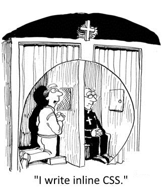

CSS Basics
• Feedback\Questions
• Homework Disucssion
• Working with CS
• Classes and ID's
• Grouping Selector
• Nested Selector
Feedback
Questions...
Q: When you are reviewing the Developer Tools and are checking out the style elements, do you copy and paste that into your own code in the CSS section?
A: Yes...but it also gives you a chance to work with them so you can understand what they are doing.
Q: How do I find out what fonts I can use in my code?
A: Whatever fonts you have available by default or can import
Q: Why is the "alt" attribute empty when we type in the img src tag?
A: Because we opted not to type anythging in but it should contain some content
Q: How do I create a list without bullets or numbers?
A: list-style-type:none
Q: Why do background images use the url tag but img uses src?
A: It's just the way it is.
Feedback..
• I still feel like the Emmet shortcuts are slowing me down for now only because I don't know them yet.
• I had a better grasp of the material today, getting excited to learn more
• I wish this class was 3 hours longer :
• I love the shortcuts for creating code, but it's a bit hard to remember.
Homework Disucssion
• Choose a neighbor to be your partner
•Open one of the press release designs that you attempted to reproduce
• Do the following:
- Explain to your neighbor at least one thing you already knew and could implement.
- Talk about one thing that you discovered from trying to rebuild the site and how you and how you think you can reapply it
•We will spend a few minutes and discuss your findings
Warmup
• Open the following Codepen (instructor will provide)
• Let's walk through the instructions together.
CSS Basics
• CSS => Cascading Style Sheets
• Stylesheet language used to describe HTML markup
• Allows separation of document content (HTML), from document styling (CSS)
⇒ "Separation of concerns"
• This CSS rule turns the text color of every paragraph, <p>, black
• One selector can have multiple declarations
• Common for each declaration to have its own line
Applying CSS
• Three ways to apply CSS to HTML:
1) Inline CSS
2) Embed in HTML using a <style> tag
3) Link to an external file using the <link> tag
<p style="color: blue; font-size: 14px;">
Keanu Reeves is Johnny Utah
</p>
<p style="color: blue; text-decoration: underline;">
Or is Johnny Utah Keanu Reeves?
</p>
• Not a good practice
• Does not separate our concerns (HTML/CSS)
• Makes debugging difficult
• ONLY USE IF WRITING HTML EMAILS
• You will make enemies
Do NOT Use Inline CSS!
<head> embed
<!DOCTYPE html>
<html>
<head>
<title>Super Awesome Website</title>
<style type="text/css">
h1 {color: red;}
p {color: blue; font-size: 14px}
</style>
</head>
<body>
...
• Better than inline styles, as styles share same location
• Bloats HTML pages
• Can make debugging large applications difficult
<!DOCTYPE html>
<html>
<head>
<title>Super Awesome Website</title>
<link rel="stylesheet" type="text/css" href="style.css">
</head>
<body>
...
• Like <title>, placed within <head>
• Truly separates HTML from CSS
• Easiest to debug; just go to your CSS file!
<link rel="stylesheet" type="text/css" href="style.css">
• rel
⇒ Specifies the relationship between the current document and the linked document
• type
⇒ Specifies the media type of the linked document
• href
⇒ Specifies the location of the linked document
I have multiple <p> tags.
How do I style each differently?
Classes and ID's
• ID's are attributes (additional data that specify element behavior)
• Assigned to only one HTML element per page (app)
• Identify the element for styling/scripting
• Cannot contain spaces
// DO NOT DO THIS
<p id="important title">Hello, World!</p>
// DO THIS
<p id="important-title">Hello, World!</p>
• Convention is to use the dash (-) as the delimiter
• To style the following ID:
<p id="important-title">Hello, World!</p>
• Use # + the ID's name:
#important-title {
color: red;
}
• Classes are also attributes
• Assigned to multiple HTML elements per page
• Identifies the elements for styling/scripting
• Like the id attribute, class cannot contain spaces
<p class="hello">Hello, World!</p>
<p class="hello">Hello, Mars!</p>
<p class="hello">Hello, Jupiter!</p>
• To style the following classes:
<p class="hello">Hello, World!</p>
<p class="hello">Hello, Mars!</p>
• Use . + the class's name:
.hello {
color: pink;
}
• Elements can have more than one class:
<p class="push-left text-smaller">Hello, World!</p>
• General rule:
⇒ Use id when you are styling ONE specific element
⇒ Use a class when you are styling a GROUP of elements
• Note:
⇒ Elements cannot have more than one ID...or can they?
⇒ Elements can have multiple classes
1. Open the following CodePen (instructor will provide link)
2. In the CSS section of the CodePen you will find the steps needed to apply styling to the content to reproduce what is seen in the image.
3. Take 2 min to review the steps and afterwards I we will ONLY begin after I have fielded no less then 3 questions from the class as a whole.
Grouping Selectors
Is there anything wrong with this CSS:
h2 {
color: red;
}
.some-class {
color: red;
}
#some-title {
color: red;
}
No - nothing is wrong! However, is anything being repeated?
• Give the same properties to a series of selectors without repeating CSS rules
• Group selectors using a comma separator:
h2, .some-class, #some-id {
color: red;
}
Nested Selectors
• CSS selectors can contain more than one selector
• More complicated selectors => targeted styles
• Child selector:
#some-id p {
color: red;
}
• This will target <p> tags inside of the element with id="some-id"
• <p> tags outside of some-id will not share this style
p a {
color: black;
}
#some-id p a {
color: red;
}
p .some-class, p #some-id {
color: blue;
}
1. Open the following CodePen (instructor will provide link)
FIN

Class #04 (of 20) - Intermediate CSS
• The Box Model: padding, border, and margin